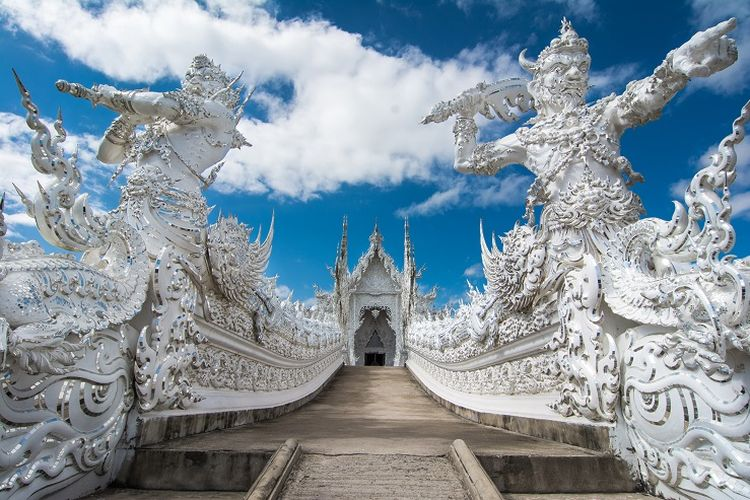

Pandemi Covid-19 memang belum berakhir. Namun, tidak ada salahnya apabila kamu berandai-andai pergi ke luar negeri, salah satunya ke Thailand.
Jauh sebelum membeli tiket pesawat atau tiket liburan, semua traveler wajib mengetahui apa saja yang harus diperhatikan ketika berkunjung ke Thailand.
Ketua Bidang Hubungan Masyarakat, Media dan Publikasi Indonesian Tour Leaders Association (ITLA) Santi Lianto mengatakan, wisatawan akan diinformasikan di bus wisata terkait larangan atau hal-hal yang harus diketahui sebelum berkunjung ke tempat wisata di Thailand.
"Biasanya, kami informasikan bawa baju untuk kunjungan ke temple atau kuil. Karena di sana ada aturan berpakaian secara sopan. Kami biasanya infokan larangan lain, seperti memegang kepala dan meremas uang," kata dia saat dihubungi Kompas.com, Senin (21/9/2020).
Selain berjuluk Negeri Gajah Putih, Thailand juga berjuluk Negeri Seribu Pagoda karena tak banyak kuil di sana. Tak hanya kuil, Thailand juga terkenal akan wisata kuliner dan belanja.
Berikut hal-hal yang harus diketahui wisatawan sebelum berkunjung ke Thailand agar liburanmu makin nyaman:
Thailand tentu mempunyai kebudayaan dan adat istiadat sendiri yang harus dipatuhi masyarakat, termasuk turis asing.
Dalam budaya atau adat istiadat, ada beberapa hal yang tidak boleh dilakukan. Berikut hal-hal yang tidak boleh dilakukan saat berkunjung ke Thailand:
Hal utama yang harus diketahui wisatawan saat berkunjung ke Thailand adalah tata cara atau etika masuk ke kuil.
Santi mengatakan, ada beberapa hal yang harus diperhatikan, mulai dari cara berpakaian yang sopan dan melepas alas kaki.
"Saat berkunjung ke sana, wajib memakai pakaian yang sopan, tidak memakai celana pendek atau rok pendek dan baju tanpa lengan. Mereka juga harus melepas alas kaki saat masuk kuil," ujar dia.

Suasana Wat Arun saat momen matahari terbenam. (SHUTTERSTOCK/THANAKORN.P)
Tak hanya itu, ada beberapa aturan lain yang wajib diketahui wisatawan di kuil, misalnya etika memotret, serta melepas topi dan kacamata hitam. Meski begitu, pengunjung tak perlu khawatir karena di setiap titik ada papan informasi yang akan mengingatkanmu akan peraturan-peraturan tersebut.
Selain larangan ketika berkunjung ke kuil, ada hal lain yang harus kamu ketahui ketika berwisata ke Thailand. Salah satunya adalah dilarang memegang kepala.
"Tidak diperkenankan memegang kepala. baik kepada orang dewasa atau anak-anak," ujar Santi.

Ilustrasi Thailand - Candi Wat Phra Kaew di Bangkok. (SHUTTERLOCK)
Bukan tanpa alasan, memegang kepala manusia dianggap tabu bagi orang Thailand. Oleh karena itu, kamu wajib menaati peraturan dan larangan tersebut.
Memahami dan menaati setiap budaya di destinasi wisata menjadi hal penting agar liburanmu menjadi nyaman dan orang-orang setempat merasa senang akan kunjunganmu.
Hal berikutnya yang wajib kamu ketahui adalah, di Thailand dilarang meremas atau melipat uang kertas.
Alasan kuat peraturan ini adalah karena orang Thailand sangat mencintai almarhum Raja Bhumibol Adulyadej.
"Dan di uang Thailand itu (Baht) terdapat foto almarhum. Maka orang Thailand akan sangat tidak suka apabila uang kertas mereka diremas atau dilipat-lipat kecil," kata Santi.
Oleh karena itu, ketika sedang berada di sana, kamu disarankan untuk tidak sekali-sekali meremas atau melipat uang kertas Thailand.
Sama seperti di Bali, kamu akan melihat banyak sesajen di jalan-jalan Thailand. Negeri Gajah Putih ini sangat menghormati tradisi budayanya.

Suasana di Pantai Maya yang ada di Pulau Phi Phi, Thailand. (AFP PHOTO/LILLIAN SUWANRUMPHA)
"Umat Buddha di Thailand sehari-harinya menyiapkan sajen yang mereka letakkan di jalan atau mobil yang mereka kendarai," katanya.
Oleh karena itu, semua orang tidak boleh atau dilarang menginjak sajen yang dilihat di jalan. Hal ini untuk menghormati budaya yang ada di Thailand.
Ada fakta dan hal menarik yang harus diketahui lainnya yaitu jangan sekali-sekali tertawa dengan mengucap hi hi hi.
"Artinya alat kelamin perempuan," jelas Santi.
Kemudian, untuk penyebutan kue tidak diperbolehkan di Thailand. Apabila kamu mengucap kue di Thailand, itu artinya alat kelamin laki-laki. Khue dalam bahasa Thailand diartikan sebagai alat kelamin laki-laki.
Oleh karena itu, jika ingin membeli kue di Thailand, kamu sebut saja dengan cake atau kue dalam bahasa Inggris.
Saat berkunjung ke Thailand, hal-hal ini boleh kamu lakukan:
Bagi pencinta belanja, tawar menawar mungkin akan sangat bermanfaat dan menjadi kegembiraan. Menurut Santi, ada satu hal yang harus diketahui wisatawan bahwa Thailand membolehkan tawar menawar ketika wisatawan berbelanja.
"Tawar menawar di Thailand adalah hal yang wajar. Bahkan bila mungkin bisa setengah harga atau bahkan lebih," ungkapnya. Kamu bisa melakukan tawar menawar dan mendapatkan harga spesial, terutama di pasar-pasar tradisional.
Ketika makan di restoran Thailand, kamu tak perlu ragu untuk bertanya soal harga menu di sana. Hal ini merupakan kewajaran bagi warga Thailand.
"Apabila masuk ke restoran di Thailand, jangan malu untuk tanya soal harga menu, terutama yang tidak ada harganya," terangnya.
Berikan pertanyaan kepada penjual makanan soal harga menu makanannya. Hal ini karena, kamu bisa saja mendapat harga tak wajar ketika membayar di kasir.
Santi pun menceritakan pengalamannya ketika menjadi wisatawan dan belum menjadi tour leader. Ia pernah mengalami hal membayar makanan secara tidak wajar.
"Semisal kita makan umum 600 THB atau 700 THB, di sana 4000 THB," kata dia.
Selain hal-hal pokok yang wajib diketahui wisatawan saat berkunjung ke Thailand, Santi juga menjelaskan beberapa hal lain sebagai fakta seru berlibur di Thailand.
Ilustrasi Thailand - Wat Rong Khun (SHUTTERSTOCK)
Thailand terkenal dengan obat-obatannya. Tak hanya itu, kamu wajib mengunjungi pertunjukan tari yang terkenal di sana salah satunya Alcazar Show atau banci Show.
Last updated 3 mins ago